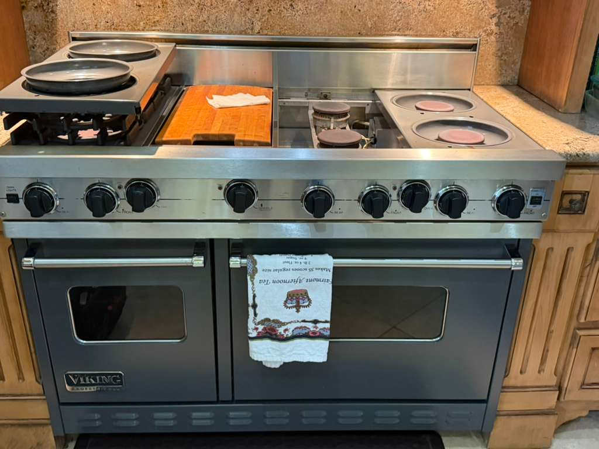

Viking · Range
Range Not Turning On
A graphite Viking Professional gas range with a griddle and a double oven that would not power on. We diagnosed and repaired it, and the burners and both ovens work again.
A Viking range that won't power on or a dishwasher that won't drain? Same-day Viking service in Pico Rivera.
5.0 · 160 Google reviewsTwo-hour arrival window. The technician calls before arriving.
See neighborhoods
Family-owned since 2017 · Licensed, bonded & insured
From our 160 verified 5-star Google reviews
Competent and friendly service. Thank you
Kind, communicative, and did a fantastic job on my parents' dishwasher & oven! Highly recommend
My cooktop burners kept clicking and sparking. We didn't feel that it was safe to use. Called AG and he quickly diagnosed the problem as a bad spark module, came out the same day, ordered the part and fixed it the next day, as soon as the part came in. He was fast, efficient, with fair pricing. He was a great communicator and kept me in the loop the whole time. Highly recommended and will use again. Thanks, AJ!
Two Viking appliances, two different problems. Here is what each one was doing and how it ended up.
Viking · Range
A graphite Viking Professional gas range with a griddle and a double oven that would not power on. We diagnosed and repaired it, and the burners and both ovens work again.

Viking · Dishwasher
A graphite Viking built-in dishwasher that would not drain. We cleared and repaired it, and now it empties fully at the end of the cycle.
Viking calls commonly start with one of four symptoms. A few quick checks are worth doing before you phone anyone, and so is knowing when to stop.
Want model-level detail? Our full Viking repair guide goes through the common failures by product line.
One ZIP code, 90660, covers the whole city, and we take Viking calls across all of it. Wherever your range or dishwasher sits, it falls under one of these areas.
Viking isn't the only brand we handle here. For refrigerators, washers, dryers and everything else, see our Pico Rivera appliance repair page.
Universal Appliances Repair Group Inc. provides Viking appliance repair in Pico Rivera, California 90660, covering ranges, rangetops, ovens, dishwashers and refrigerators. Our technician for these calls is based in Los Angeles County.
We also serve neighboring Whittier, Montebello and Downey, with same-day service available. Call (949) 629-5365 or book online to schedule a Viking repair visit.
Still have a question? Call (949) 629-5365.
Same-day service is available. Every repair carries a 90-day parts and 30-day labor warranty.